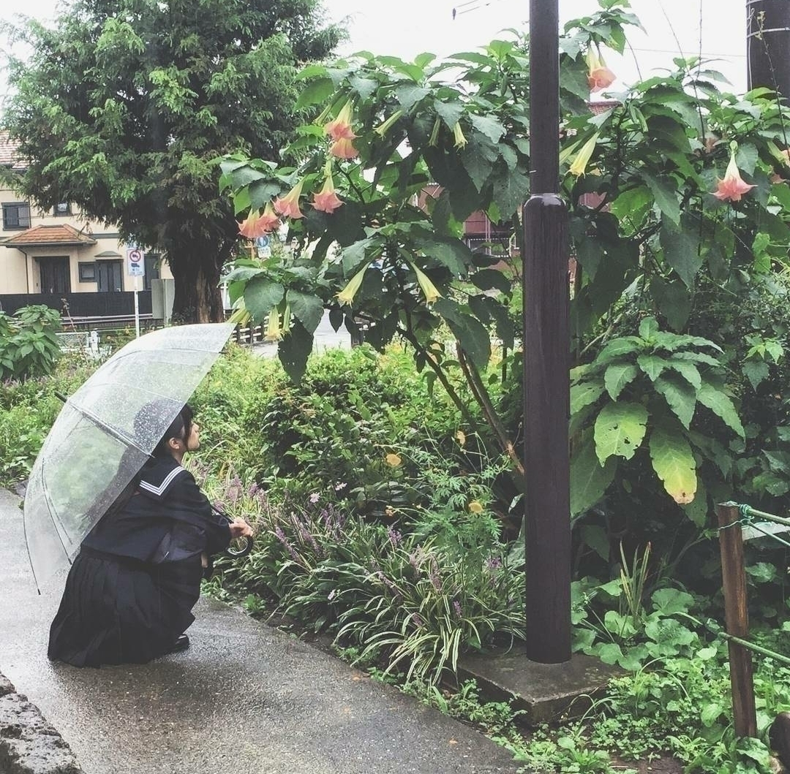

2016/1023Sun2㍉を8mmにする
今日の個別握手会の生誕祭で宣言した通り
今の想いを書きます
良かったら読んで下さい。
選抜発表をされた日から
ずっと色んな想いも抱えながら
いろんなお仕事をしてました。
今思ってる事
全部ちょっとずつ書き留めました。
上手く言葉、文に表すのは難しいけど
読んで頂ければと思います。
16枚目シングル
今までで1番
期待の声が大きかった今回。
2つ前作品あたりから
どんどんどんどん
皆さんに
「絶対、入ってる」
フライングの「おめでとう」
認められてきてるって
嬉しさと共に
悪い事ではないのに
自分が嘘ついたみたいな感覚に追われて凄く息苦しい
表し難い感情がずっとありました
今の私の気持ちを例えるなら、、、
モンブランやエベレストに
酸素ギリギリで登れ
そして、耐えろ
耐えれないけど
耐えなきゃ見えない。
そんなことしたら
壊れるかもしれないけど
でも、何かを超えた。
人よりなにか高いものを超えなきゃ認めてもらえなかった。
変な表し方ですが
私の生き方って昔からそうだなって
それと1つ
昔からずーっと言ってますが何事においても
この環境が当たり前って思って欲しくないです。
アンダーライブ
・・
また
楽しみにしてる
言って下さる皆さんはきっと悪気も無いと思います
本当に心の底からアンダーライブと言う物が楽しかったからこそ言ってくれる言葉だと解釈してます。
それだったら大変嬉しいです。
アンダーライブは本当に素晴らしいものです。
でも、毎回当たり前に思われてしまっていること
いつもある物でもないです。
色んな人の努力、純粋な想いが繋がり今までがあります。
だから、ある物とは思ってほしくありません。
私がいつまでも
アンダーでいるものって
皆さんはそんな風に思って言ってないと思います。
でも、私は毎回この言葉に
どう返していいのかわかりません。
今までは例としてアンダーライブも1つの
「先入観」だなって思い話しましたが
皆さんの先入観で
何かを作り上げてしまっている。
先入観がその物をその人を作ってしまうんです。
私はそんなもの壊します。
私は私が決めたい。
今シングルの目標は
己を信じること。
だから、私の事を
一人でも支えてくれる人
一緒に歩いてくれる人がいるなら私はやります。
ここから先は乃木坂工事中で選抜発表されてから書いたものです。
やっぱり今までで一番
ファンの方の声が大きくて
なにか胸にグッときました。
私も皆さんの意見を聞いて
もう少し自信を持とうって思いました。
だからはっきり言います
悔しい。
タイミングとかバランスとか色々な運命が重なったからこそ今回は私じゃない。
それは自分でも飲み込んでます。
このシングルは
アンダーメンバーとして
もう1つ何かを身につける。
まだ、何があるのか
私たち自身も知らないけど
きっといい事があるはず
何で私が今シングルアンダーメンバーなのか理由は
これから分かるはず
なかったら自分で探すのみ。
そして次
年を越した頃には
また何か雰囲気の違う自分が居て
そこからは絶対、、、
絶対、どうにかしなきゃいけないし
どうにかなってる。
絶対的確信があるんです。
よく分からないけど
毎回過去のブログを読んでいて思うのは昔より1シングルずつ確信をついてる
現実味を帯びてきている事
。
だからこそ今回はグッと飛ぶ為の助走を今までより大きく踏み切りたい。
この皆さんの「悔しい」
私に思ってくださった方全員分背負いたい！
背負わせてください！
だから一緒に戦うって言うと意味が少し違うけど
負な気持ちと
戦いたい。
砕きたい。
見てて欲しいです。
人の慣れは一番良くない
見慣れたものなんて飽きるそう言うのなら私が撤回します。
私が昔
「1回きりの選抜は嫌認められて選抜になりたい。」って言ったこと知ってる人いますか？
正にその通り
昔はよく思ってなかった方もいたと思います。
自分でも生意気に思われるかもって心配もありました。
でも、そんな事気にするのでなく思った事はハッキリ口にする。
自分にも周りの人達にもウソつかぬようその夢に向かい努力する。
そうやって
今私が歩んできた道は
確実に少しずつではありますが現実に近づいています。
それはこんな私は見つけてくれた皆さんのお陰です。
私がこういう感情を得られるのも皆さんのお陰。
何回も同じ事ばかり言ってしまいますが
「悔しい」
悔しい私も同じ気持ちです。
だから
だったら
今シングル
皆で力合わせて
手繋いで
踏ん張ろう！
魅せつけよう！
弱い、一人だと潰れるけど
一人でも多くの人と手を取り合えばドンドン強くなる
！
皆さんも色んな想い
預けてみませんか？
色々思うことあるなら
鵜呑みにしないで
吐き出したい！
私はそういう人間です！
今年は何だか
楽しそうですね。

発売中のUTBさんのオフショット
2016/10/23 22:06
コメント(1454)
蘭世今日はおつかれさま！ 5部の髪型さらに可愛かった！
ごめんね、次のシングルは就活とか色々被って行けそうにない(>_<)
アンダラ関東あるか分からんけど楽しみに待っとるよ！
ライブは行くからね！
夏目友人帳あとで見るよー！
蘭世のおかげで色々刺激をうけたり、蘭世の言葉でヤル気出たよ！ これからも頑張ってね！サンエトの曲楽しみにしてる！
握手会おつかれさま！
ライブは行くからね！
夏目友人帳あとで見るよー！
蘭世のおかげで色々刺激をうけたり、蘭世の言葉でヤル気出たよ！ これからも頑張ってね！サンエトの曲楽しみにしてる！
握手会おつかれさま！
生誕おめでとう
お疲れ様！！
寺田蘭世とてもよきかな
握手会おつかれさーん！
UTBかわいすぎた、
らんぜの勢いとまらんぜ！
あしたからもがんはわろぜ！
UTBかわいすぎた、
らんぜの勢いとまらんぜ！
あしたからもがんはわろぜ！
蘭世今日はおつかれさま！ 5部の髪型さらに可愛かった！
ごめんね、次のシングルは就活とか色々被って行けそうにない(>_<)
アンダラ関東あるか分からんけど楽しみに待っとるよ！
ライブは行くからね！
夏目友人帳あとで見るよー！
蘭世のおかげで色々刺激をうけたり、蘭世の言葉でヤル気出たよ！ これからも頑張ってね！サンエトの曲楽しみにしてる！
握手会おつかれさま！
ライブは行くからね！
夏目友人帳あとで見るよー！
蘭世のおかげで色々刺激をうけたり、蘭世の言葉でヤル気出たよ！ これからも頑張ってね！サンエトの曲楽しみにしてる！
握手会おつかれさま！
らんぜブログ更新ありがとう！！！
選抜目指してがんばれ！応援してます！
選抜目指してがんばれ！応援してます！
らんぜ、今日の個別お疲れ様
名古屋の個別行くから宜しくね！
名古屋の個別行くから宜しくね！
らんぜ！ブログ更新ありがとう！
ユンです(*^^*)
生誕祭、楽しみましたか？
みんなでこんな素敵な時間を作るのは本当にすごいことだと思います！
本当にお疲れ様でした！
翻訳終わって
ブログの感想はゆっくり書こうと思ってます！
では！
また書きますね！
ユン
ユンです(*^^*)
生誕祭、楽しみましたか？
みんなでこんな素敵な時間を作るのは本当にすごいことだと思います！
本当にお疲れ様でした！
翻訳終わって
ブログの感想はゆっくり書こうと思ってます！
では！
また書きますね！
ユン
宣言通りブログ更新ありがとう！！！！
握手会もお疲れ様！すごい楽しかった！
生誕祭も二列目で見たよ！
18歳とは思えないスピーチで改めて蘭世のことが好きになった！笑
またコメントするね！
蘭世の勢い止まらんぜ！！
たくや。
握手会もお疲れ様！すごい楽しかった！
生誕祭も二列目で見たよ！
18歳とは思えないスピーチで改めて蘭世のことが好きになった！笑
またコメントするね！
蘭世の勢い止まらんぜ！！
たくや。
選抜入れなくても蘭世を応援してるよ
今日行きたかったけど行けなかった
来週行くね
めっちゃ楽しみ笑
では、
今日行きたかったけど行けなかった
来週行くね
めっちゃ楽しみ笑
では、
うい！
コメント久々やな^^;
手紙出し忘れたからまた書いて新たに出すわ←
握手については
誰がデブや！！
いや、デブだけどさ:;(∩´﹏`∩);:
次いつ顔出せるかは教えないことにするね笑
家着くの1時半っすおやすみなさい♪
コメント久々やな^^;
手紙出し忘れたからまた書いて新たに出すわ←
握手については
誰がデブや！！
いや、デブだけどさ:;(∩´﹏`∩);:
次いつ顔出せるかは教えないことにするね笑
家着くの1時半っすおやすみなさい♪
がんばれ！！
蘭世の勢いは全く止まってないよ！！
ポジションがどこであっても、蘭世はちゃんと輝いてるし、どこで頑張っても応援するよ！！！
今日の生誕祭もめちゃくちゃ楽しかった！！来週は握手行くからよろしくね！！
ポジションがどこであっても、蘭世はちゃんと輝いてるし、どこで頑張っても応援するよ！！！
今日の生誕祭もめちゃくちゃ楽しかった！！来週は握手行くからよろしくね！！
らんぜちゃんがんばれ〜〜！
握手会おつかれさまです。
生誕いきたかったなあ、、
京都まで我慢します
らんぜ最近ほんまに勢いすごいから
自分に自信持ってがんばってください
早く会いたい、
生誕いきたかったなあ、、
京都まで我慢します
らんぜ最近ほんまに勢いすごいから
自分に自信持ってがんばってください
早く会いたい、
蘭世お誕生日おめでとう！
パシフィコで生誕祭見てきたよー
一月には個握とったから会いに行くね！
真夏軍団に負けるな～！！
パシフィコで生誕祭見てきたよー
一月には個握とったから会いに行くね！
真夏軍団に負けるな～！！
蘭世！！！！！！
俺は着いてくよ！！！
ここ踏ん張って次に繋げよう！！
応援してるよ！
俺は着いてくよ！！！
ここ踏ん張って次に繋げよう！！
応援してるよ！
すごいかっこいいよ（ ; ; ）
これからも応援させてもらうよ！
これからも応援させてもらうよ！
らんぜ！
らんぜの想い、伝わりました！
らんぜが全力なので
わたしも全力で応援します！
らんぜの成長はしっかりと感じてるよ(o^^o)
らんぜの想い、伝わりました！
らんぜが全力なので
わたしも全力で応援します！
らんぜの成長はしっかりと感じてるよ(o^^o)
予告通りのブログ更新ありがとうー!!
蘭世の勢い止まらんぜーヽ(・∀・)ノ
今回は残念だったけど…
次のシングルでの選抜入り期待してるよ!!
11月の名古屋個別握手会行くよー
ずっと応援してます(°▽°)
蘭世の勢い止まらんぜーヽ(・∀・)ノ
今回は残念だったけど…
次のシングルでの選抜入り期待してるよ!!
11月の名古屋個別握手会行くよー
ずっと応援してます(°▽°)
アンダーライブはほんまに
楽しそうやからめっちゃ行きたい！
次のシングルは選抜に
入れように俺たち頑張るから
期待しといて
寺田蘭世とてもよきかな
楽しそうやからめっちゃ行きたい！
次のシングルは選抜に
入れように俺たち頑張るから
期待しといて
寺田蘭世とてもよきかな
今日の生誕祭感動した！
蘭世！絶対に応援するから！
蘭世！絶対に応援するから！
ブログ更新ありがとう！
決意伝わったよ…！
僕も蘭世が着々と選抜に近づいてると感じてるし、周りのファンも思ってると思うよ。
腐らないで頑張る姿勢、僕は大好きです。
アンダーライブ行けるかわからないけど、行けたら輝いてる姿を目に焼き付けて、握手会で感想伝えたいな！
頑張れ！！背中押すよ！！
決意伝わったよ…！
僕も蘭世が着々と選抜に近づいてると感じてるし、周りのファンも思ってると思うよ。
腐らないで頑張る姿勢、僕は大好きです。
アンダーライブ行けるかわからないけど、行けたら輝いてる姿を目に焼き付けて、握手会で感想伝えたいな！
頑張れ！！背中押すよ！！
蘭世が次こそは選抜に入れるように全力で応援します!!
アンダーライブも楽しみにしてます(っ´ω`c)ﾏｯ...
UTB読んだよ〜
アンダーライブも楽しみにしてます(っ´ω`c)ﾏｯ...
UTB読んだよ〜
蘭世ブログ更新ありがとう！！
今日はお疲れ様でした。今日は、生誕祭とかもあって、たくさんの人だったね
2~5部まで、蘭世レーンに行きました。ありがとう！
次は、11月だね！
それまで元気で頑張ってね！！
お疲れ様！ゆっくり休んでください。。
今日はお疲れ様でした。今日は、生誕祭とかもあって、たくさんの人だったね
2~5部まで、蘭世レーンに行きました。ありがとう！
次は、11月だね！
それまで元気で頑張ってね！！
お疲れ様！ゆっくり休んでください。。
蘭世が選抜に入るまでは頑張って支えていきます٩(●˙▽˙●)۶
だから今はじっと耐えて今やれることは全部やって踏ん張ってそして選抜発表で呼ばれて嬉しそうにする姿を見させてくださいね( ･ㅂ･)و ̑̑
だから今はじっと耐えて今やれることは全部やって踏ん張ってそして選抜発表で呼ばれて嬉しそうにする姿を見させてくださいね( ･ㅂ･)و ̑̑
選抜入れるように頑張ってね
蘭世最高〜
蘭世最高〜
！！！！！！！！！！！！！！！！！！！！！！！！！！
努力が報われる瞬間が早く見たいです。
蘭世さん握手良きでした。
癒されました。
頑張って下さい応援してます。
！！！！！！！！！！！！！！！！！！！！！！！！！！
努力が報われる瞬間が早く見たいです。
蘭世さん握手良きでした。
癒されました。
頑張って下さい応援してます。
！！！！！！！！！！！！！！！！！！！！！！！！！！
蘭世〜こんばんは！
今日は握手会ありがとうございました☺︎︎☺︎︎3部鍵開けと4部1枚行きました！蘭世にバイト面接応援してもらったからには頑張ります！！！生誕祭も待機列最前から見てて良き〜でした！やっぱボーダーめっちゃ好きですわあ♪
あと選抜発表の事ブログ更新ありがとう。ここからは真面目な話になるけど蘭世は本当に乃木坂のアンダーとして頑張ってるの見ててわかるし絶対努力が報われる時が来ます。僕は蘭世を応援し始めてから自分の中で決めている事があってそれは｢たとえどんなに自分が忙しくなっても蘭世が笑顔で選抜入りするまではずっと支えていきます｣という事です。ファンの1人として自分に出来る事は応援することとかしか無いからこういう事でしか支えてあげられないけど少しでも蘭世の勇気に繋がってくれたら嬉しいなって思います
今日は握手会ありがとうございました☺︎︎☺︎︎3部鍵開けと4部1枚行きました！蘭世にバイト面接応援してもらったからには頑張ります！！！生誕祭も待機列最前から見てて良き〜でした！やっぱボーダーめっちゃ好きですわあ♪
あと選抜発表の事ブログ更新ありがとう。ここからは真面目な話になるけど蘭世は本当に乃木坂のアンダーとして頑張ってるの見ててわかるし絶対努力が報われる時が来ます。僕は蘭世を応援し始めてから自分の中で決めている事があってそれは｢たとえどんなに自分が忙しくなっても蘭世が笑顔で選抜入りするまではずっと支えていきます｣という事です。ファンの1人として自分に出来る事は応援することとかしか無いからこういう事でしか支えてあげられないけど少しでも蘭世の勇気に繋がってくれたら嬉しいなって思います
人それぞれいろんな考え方があってらんぜには向上心が、一番感じられる。
だからこそ応援したいってみんな思うだよ！
俺もそのひとりです
だからこそ応援したいってみんな思うだよ！
俺もそのひとりです
蘭世こんばんわ！
ブログ更新ありがとー！
今日、蘭世の生誕祭行きたかっなぁー。
蘭世今回、選抜メンバーになれなかったけど、
アンダーで歌っている蘭世も輝いてるよ！
次のシングルは絶対選抜メンバーはいれるように蘭世と蘭世ファンで団結して頑張っていこう！
僕(蘭世ファン)は、蘭世が次のシングルで選抜メンバーにはいることを願っています。
ではまた！
蘭世の勢いとまらんぜ！
ブログ更新ありがとー！
今日、蘭世の生誕祭行きたかっなぁー。
蘭世今回、選抜メンバーになれなかったけど、
アンダーで歌っている蘭世も輝いてるよ！
次のシングルは絶対選抜メンバーはいれるように蘭世と蘭世ファンで団結して頑張っていこう！
僕(蘭世ファン)は、蘭世が次のシングルで選抜メンバーにはいることを願っています。
ではまた！
蘭世の勢いとまらんぜ！
蘭世の心意気が伝わってきます。
これからも蘭世を、応援し続けるから頑張ってね！
これからも蘭世を、応援し続けるから頑張ってね！
確信した。
蘭世さん、やっぱりあなたはカッコいいよ。
蘭世さん、やっぱりあなたはカッコいいよ。
有言実行したね(笑)
選抜入りを果たすってゆう有言も実行して欲しいです。
選抜が増えたかららんぜも来るだろうと考えてた。
らんぜがセンターになりたいと誰よりも強く思ってる事を前々から知ってたから選抜入り、そして選抜のセンターとして活躍するらんぜをいつまでも楽しみにしてます
選抜入りを果たすってゆう有言も実行して欲しいです。
選抜が増えたかららんぜも来るだろうと考えてた。
らんぜがセンターになりたいと誰よりも強く思ってる事を前々から知ってたから選抜入り、そして選抜のセンターとして活躍するらんぜをいつまでも楽しみにしてます
今回の選抜発表があってらんぜさんはどー思ったけど、正直にこうして書き記してくれてとても嬉しく思います！
らんぜさんのファンになってそんな長くないですかこれからも一緒にがんばってのぼり続けていけたらいいなと思ってます。
応援してしています。
3/12個握いきますね(´へωへ`*)
らんぜさんのファンになってそんな長くないですかこれからも一緒にがんばってのぼり続けていけたらいいなと思ってます。
応援してしています。
3/12個握いきますね(´へωへ`*)
蘭世お疲れ様！
また次長いコメントしちゃうかも知れない。
てか、する！
また明日コメント読んでね！
また次長いコメントしちゃうかも知れない。
てか、する！
また明日コメント読んでね！
ブログ更新ありがとう。
握手会お疲れ様でした。生誕祭楽しかったですね！生誕委員としてやってきた甲斐がありました(^^)
伊織さんにお手紙で言われていたこと。
「蘭世には嘘がない」
これは本当の事だと思います。センターになるというのもいつかは本当のことになると信じています。そんな蘭世を一生応援し続けていきます。
アンダーライブどこでやりたい？って聞いた時もやらせてもらえるだけありがたいって。
感謝の気持ちを忘れない蘭世は流石だと思いました。いろんな人の支えと協力があって成り立ってるもの。簡単に聞いてしまってすみませんでした。
でももし、もしやらせてもらえたなら地元の福井(北陸)に来てほしいなぁ笑
また握手会の時お話しさせてもらいますね。
ハロウィンの時は行けないけど、次は名古屋。楽しみに待ってます。
今日は本当にお疲れ様でした。
ゆっくり休んでくださいね。
16枚目の寺田蘭世。
楽しみにしてます！
一生蘭世推しのゆうたより
握手会お疲れ様でした。生誕祭楽しかったですね！生誕委員としてやってきた甲斐がありました(^^)
伊織さんにお手紙で言われていたこと。
「蘭世には嘘がない」
これは本当の事だと思います。センターになるというのもいつかは本当のことになると信じています。そんな蘭世を一生応援し続けていきます。
アンダーライブどこでやりたい？って聞いた時もやらせてもらえるだけありがたいって。
感謝の気持ちを忘れない蘭世は流石だと思いました。いろんな人の支えと協力があって成り立ってるもの。簡単に聞いてしまってすみませんでした。
でももし、もしやらせてもらえたなら地元の福井(北陸)に来てほしいなぁ笑
また握手会の時お話しさせてもらいますね。
ハロウィンの時は行けないけど、次は名古屋。楽しみに待ってます。
今日は本当にお疲れ様でした。
ゆっくり休んでくださいね。
16枚目の寺田蘭世。
楽しみにしてます！
一生蘭世推しのゆうたより
更新ありがとう！！
今日は握手会ありがとねーー
らんぜの思いはめちゃくちゃこの文から伝わってくるから俺も全力で応援するね！ 次のシングルでは必ず選抜入りできる！
オフショットも最高⤴⤴
勢いとまらんぜ！
今日は握手会ありがとねーー
らんぜの思いはめちゃくちゃこの文から伝わってくるから俺も全力で応援するね！ 次のシングルでは必ず選抜入りできる！
オフショットも最高⤴⤴
勢いとまらんぜ！
更新ありがとう！！
今日は握手会ありがとねーー
らんぜの思いはめちゃくちゃこの文から伝わってくるから俺も全力で応援するね！ 次のシングルでは必ず選抜入りできる！
オフショットも最高⤴⤴
勢いとまらんぜ！
今日は握手会ありがとねーー
らんぜの思いはめちゃくちゃこの文から伝わってくるから俺も全力で応援するね！ 次のシングルでは必ず選抜入りできる！
オフショットも最高⤴⤴
勢いとまらんぜ！
頑固と言われても、生意気と言われても自分自身の決めた筋を通す蘭世ちゃん素敵です。かっこいいです。批判は人気実力があるから生まれるのであって、ここからが真の勝負かもですね。できる限り後押し、応援します。
らんぜの勢いとまらんぜ!!!!
ブログ更新ありがとぅございます
ブログ更新ありがとぅございます
次は絶対大丈夫です
応援してます、何処にいても
応援してます、何処にいても
蘭世のがんばりはみんなに伝わってるし、
まだまだいけると思う！
蘭世も多分よくわかってるからあんまりゆう事はないけど
とりあえずみんな応援してるから！
頑張って！
16thも楽しんで！
まだまだいけると思う！
蘭世も多分よくわかってるからあんまりゆう事はないけど
とりあえずみんな応援してるから！
頑張って！
16thも楽しんで！
蘭世の今回の言葉の1言1言が胸に突き刺さりました！
蘭世自身も選抜入れなくて悔しいことが分かり
応援しているファンから見ても悔しいです
だから僕は蘭世へのこの期待を常に上を目指してる
蘭世に託します。
どんなに不器用でもいいんだよ、蘭世が努力している事は
ファンが一番分かってます！
蘭世自身も選抜入れなくて悔しいことが分かり
応援しているファンから見ても悔しいです
だから僕は蘭世へのこの期待を常に上を目指してる
蘭世に託します。
どんなに不器用でもいいんだよ、蘭世が努力している事は
ファンが一番分かってます！
応援する
(^o^)
(^o^)
蘭世ちゃんのことは最近知るようになったから何も言う資格はないけど、アンダーのままじゃいやだっていう気持ちが自分を強くしていくと思うし、発信していくのは悪いことじゃないと思うよ。
蘭世ブログ更新ありがとう
まず最初に、今日生誕祭なのに握手会行けなかった(；▽；)
ほんと現場に行ってしっかりおめでとうって言いたかった(；▽；)
29日ちゃんと言いにいきます！(；▽；)
次に、蘭世のブログは、なんだろう、勇気とか元気とかもらえるし、人として尊敬といった感情になります。
蘭世をずっと応援したいと思えるし。
蘭世を推していてすごく嬉しいというか、楽しいというか、、、
うまく言葉にできないんですが…笑笑
蘭世のブログ、言葉が大好きなんです。笑
良い意味で、全て壊していってほしい。新しい道、蘭世しかできない、作れない道を作っていってほしい。
そのために精一杯応援、推していきます！
まず最初に、今日生誕祭なのに握手会行けなかった(；▽；)
ほんと現場に行ってしっかりおめでとうって言いたかった(；▽；)
29日ちゃんと言いにいきます！(；▽；)
次に、蘭世のブログは、なんだろう、勇気とか元気とかもらえるし、人として尊敬といった感情になります。
蘭世をずっと応援したいと思えるし。
蘭世を推していてすごく嬉しいというか、楽しいというか、、、
うまく言葉にできないんですが…笑笑
蘭世のブログ、言葉が大好きなんです。笑
良い意味で、全て壊していってほしい。新しい道、蘭世しかできない、作れない道を作っていってほしい。
そのために精一杯応援、推していきます！
蘭世のブログ、気持ちがすごく伝わったきた！
面と向かって言ってもらってるような感覚…
さらに輝く蘭世になった姿を選抜でみたいな(((o(*ﾟ▽ﾟ*)o)))
面と向かって言ってもらってるような感覚…
さらに輝く蘭世になった姿を選抜でみたいな(((o(*ﾟ▽ﾟ*)o)))


ありがと！
蘭世の勢いとまらんぜはまだまだこれからだよね
これからも坂を上っていく背中を微力ながら押させていただきます(*^^)v